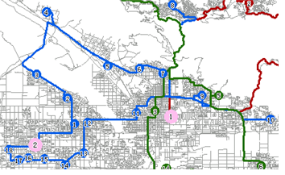
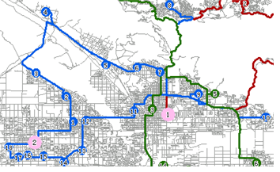

com.supermap.android.networkAnalyst
类 FindMTSPPathsService
java.lang.Object
 com.supermap.android.networkAnalyst.FindMTSPPathsService
com.supermap.android.networkAnalyst.FindMTSPPathsService
-
public class FindMTSPPathsService
- extends java.lang.Object
多旅行商分析服务类。
多旅行商分析属于网络分析的一种，也称为物流配送，是指在网络数据集中，给定 M 个配送中心点和 N 个配送目的地（M，N 为大于零的整数），查找经济有效的配送路径，并给出相应的行走路线。物流配送功能就是解决如何合理分配配送次序和送货路线，使配送总花费达到最小或每个配送中心的花费达到最小。 例如：现在有50个报刊零售地（配送目的地），和4个报刊供应地（配送中心），现寻求这4个供应地向报刊零售地发送报纸的最优路线，属物流配送问题。下面的示意图展示了这个例子的情况以及进行多旅行商分析后的简图。 如下图所示，左图中粉色大圆点代表4个报刊供应地（配送中心），而其他小圆点代表报刊零售地（配送目的地），共有50个；每一类颜色代表一个配送中心的配送方案，包括它所负责的配送目的地、配送次序以及配送线路。 右图为左图中矩形框圈出的第2号配送中心的配送方案：蓝色的标有数字的小圆点是2号配送中心所负责的配送目的地（共有18个），2号配送中心将按照配送目的地上标有数字的顺序依次发送报纸，即先送1号报刊零售地，再送2号报刊零售地，依次类推，并且沿着分析得出的蓝色线路完成配送，回到配送中心。 该类负责将客户端指定的多旅行商分析参数传递给服务端，并接收服务端返回的结果数据，将最终结果存放于 FindMTSPPathsResult 类中。
 

| 从类 java.lang.Object 继承的方法 |
clone, equals, finalize, getClass, hashCode, notify, notifyAll, toString, wait, wait, wait |
FindMTSPPathsService
public FindMTSPPathsService(java.lang.String url)
-
构造函数。
- 参数：
url - 多旅行商分析服务地址
getlastResult
public FindMTSPPathsResult getlastResult()
-
获取多旅行商分析结果数据。
-
- 返回：
- 多旅行商分析结果。
process
public <T> void process(FindMTSPPathsParameters<T> parameters,
FindMTSPPathsService.FindMTSPPathsEventListener listener)
-
根据多旅行商分析服务地址与服务端完成异步通讯，即发送分析参数，并通过实现FindMTSPPathsEventListener监听器处理查询结果。
-
- 参数：
parameters - 多旅行商分析参数信息。listener - 处理查询结果的FindMTSPPathsEventListener监听器。